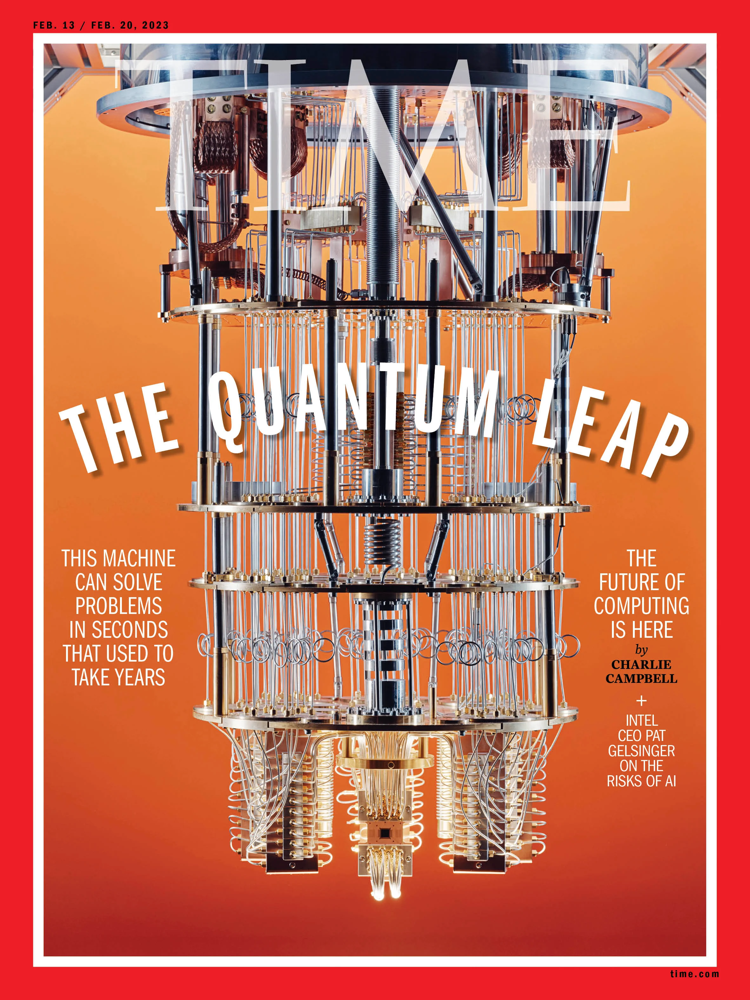
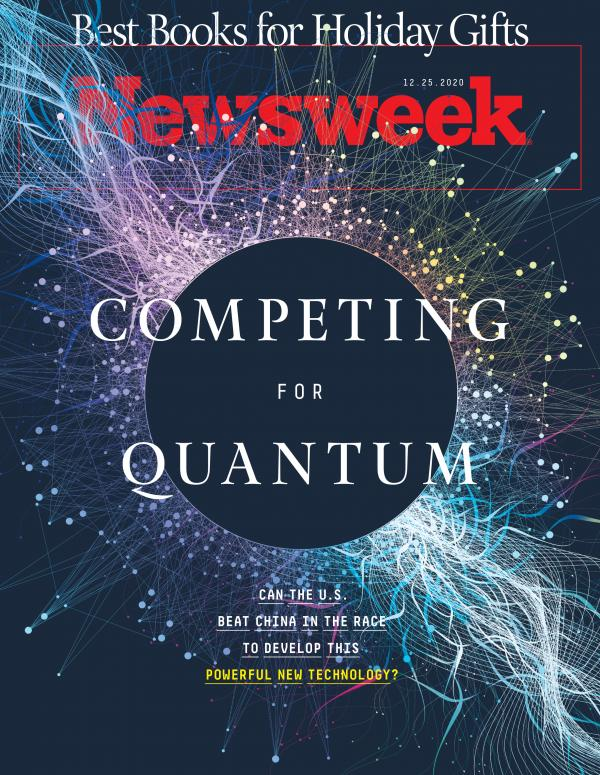
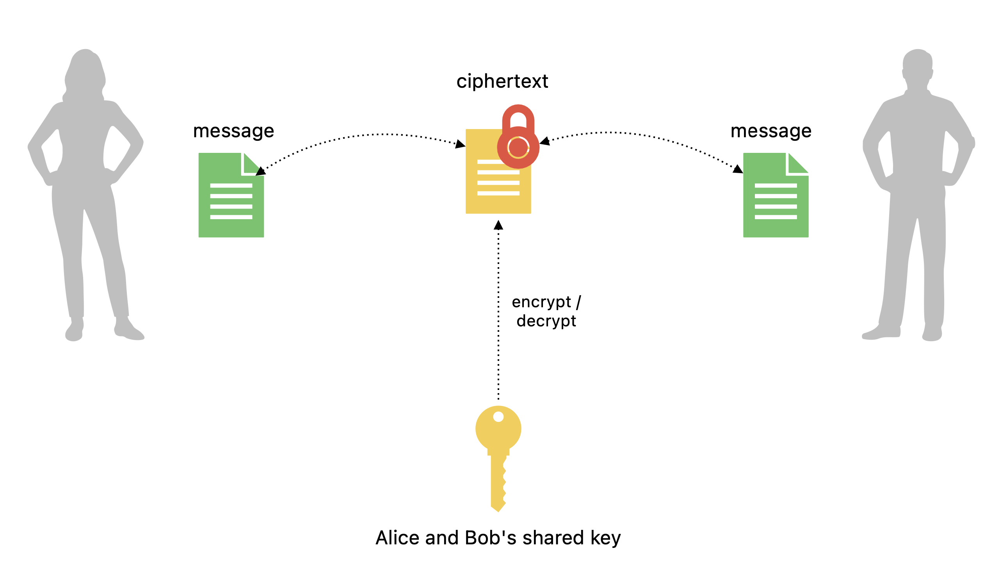
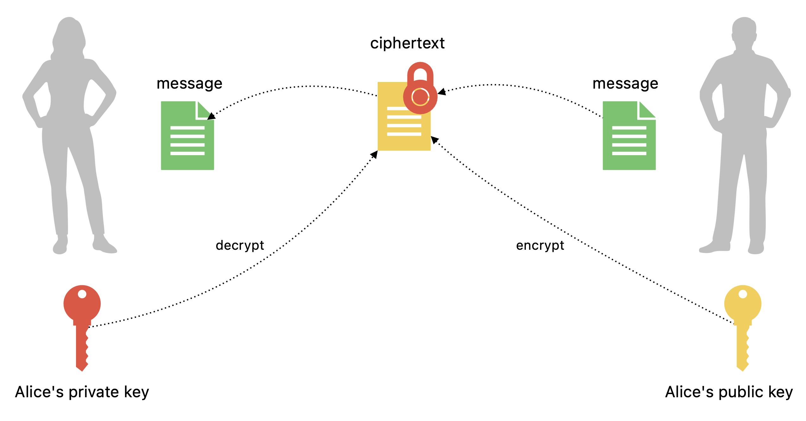
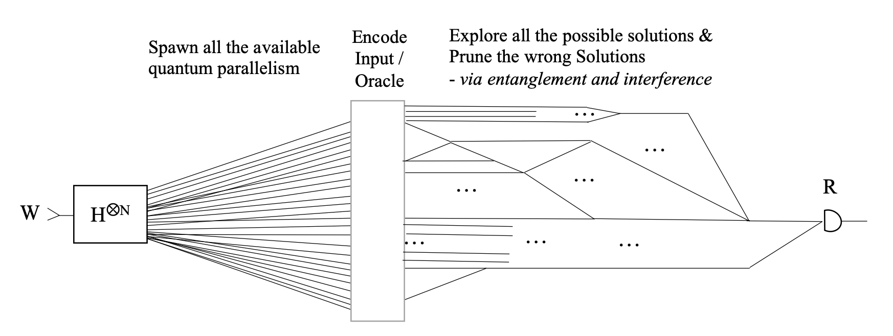

Symmetric encryption

Asymmetric encryption

Hybrid model
Many protocols, for example TLS, start with an asymmetric handshake, and then switch to symmetric encryption.

Quantum threats

source: Stefano Markidis, KTH Royal Institute of Technology, https://arxiv.org/abs/2405.07222
Heuristically, and at the risk of over-simplifying, quantum parallelism allows quantum computers to evaluate a function $f(x)$ for many different values of $x$ simultaneously.
One of the most widely used public-private cryptosystems is RSA (Rivest–Shamir–Adleman)
Its security relies on the factoring problem - recovering two large primes from their product.

Example: factoring 15
- 1. Set $a = 13$
- 2. Find order $r = 4$
- 3. Calculate:
$p = gcd(170, 15) = 5$
$q = gcd(168, 15) = 3$

5 and 3 are factors of 15.
Shor's algorithm relies on inverse Quantum Fourier Transform used for function order finding. QFT is exponentially faster than any classical alternative.